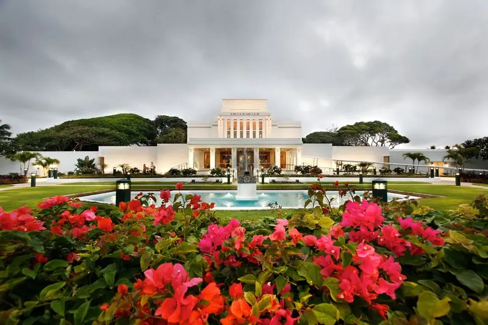
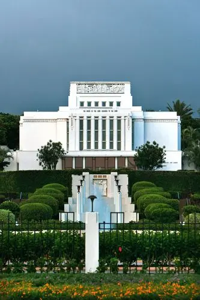

Laie Hawaii Temple
The Laie Hawaii Temple is one of the most iconic landmarks on the North Shore of Oahu. Dedicated in 1919, it was the first temple built outside of Utah and holds deep spiritual significance for members of The Church of Jesus Christ of Latter-day Saints worldwide.

